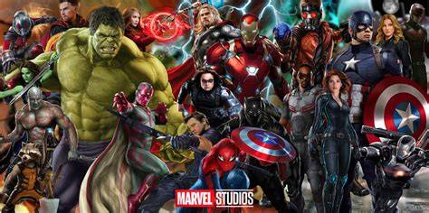

Marvel Studios, LLC, formerly known as Marvel Films, is an American film and television production company. Marvel Studios is the creator of the Marvel Cinematic Universe (MCU), a media franchise and shared universe of films and television series produced by the studio, based on characters that appear in Marvel Comics publications. The studio was founded in 1993 by Avi Arad as part of Marvel Entertainment Group and has been led by producer Kevin Feige, who has served as its president since 2007. The studio originally licensed the film rights for several Marvel characters before beginning to produce its own films in 2004, and has since regained many of those rights. The Walt Disney Company acquired Marvel Studios' parent company, Marvel Entertainment, in 2009. Marvel Studios was transferred in 2015 to the Walt Disney Studios, which has been a part of the Disney Entertainment division since 2023. Walt Disney Studios Motion Pictures has distributed most of the studio's films since The Avengers (2012). Since 2008, Marvel Studios has released 37 films within the MCU, from Iron Man (2008) to The Fantastic Four: First Steps (2025) and 15 television series since 2021, from WandaVision (2021) to Eyes of Wakanda (2025). The studio also operates the smaller Marvel Studios Animation division, which developed the television series What If...? (2021–2024) as the first animated property produced solely by the studio.[7] These films and television series all share continuity with each other, along with five short films called Marvel One-Shots produced by the studio that were released from 2011 to 2014 and two television specials called Marvel Studios Special Presentations released in 2021 and 2022. From 2013 until 2020, Marvel Television released 12 television series, which also acknowledge the MCU continuity. These were produced before that company was folded into Marvel Studios in December 2019 and became a production label. Since 2024, Marvel Studios has used "Marvel Television" and "Marvel Animation" banners to release its television and animated projects, respectively. Eleven of Marvel Studios' films are among the 50 highest-grossing films of all time. These include: The Avengers, Iron Man 3 (2013), Avengers: Age of Ultron (2015), Captain America: Civil War (2016), Black Panther (2018), Avengers: Infinity War (2018), Captain Marvel (2019), Avengers: Endgame (2019), Spider-Man: Far From Home (2019), Spider-Man: No Way Home (2021), and Deadpool & Wolverine (2024);[8] Avengers: Endgame was the highest-grossing film of all time from July 2019 until March 2021.[9][10] In addition to the MCU, Marvel Studios has also been involved with the production of other Marvel-based film franchises that have grossed over $1 billion at the box office, including the X-Men and Spider-Man multi-film franchises, as well as eight direct-to-video short films with Marvel Animation called Marvel Animated Features that were released from 2006 until 2011.
Marvel Comics's predecessor Timely Comics, which operated from 1939 until 1950, licensed out the use of its character Captain America to Republic Pictures for a 1944 film serial only for the free advertising, but Timely failed to provide any drawing of Captain America with his shield or any further background. Republic created a whole new background for the character, who was portrayed as using a gun.[11] From the late 1970s through the early 1990s, Marvel Comics Group and Marvel Entertainment Group (MEG) sold options to studios to produce films based on Marvel Comics characters. One of Marvel's superheroes, Spider-Man, was optioned in the late 1970s, and rights reverted to Marvel without a film being produced within the allocated time frame. From 1986 to 1996, most of Marvel's major characters were optioned, including the Fantastic Four, X-Men, Daredevil, the Hulk, Silver Surfer, and Iron Man.[12] Marvel's first big-screen adaptation of one of its properties was the 1986 film Howard the Duck,[13] which was a box-office bomb.[14] MEG was purchased by New World Entertainment in November 1986[15] and moved to produce films based on the Marvel characters. It released The Punisher (1989) before MEG was sold to Ronald Perelman's Andrews Group. Two other films were produced: Captain America (1990) released in the United Kingdom on screens and direct to video in the United States, and The Fantastic Four (1994), not intended for release.[16]